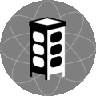

jascha ehrenreich
technomancer and artivist
i juggle with code since twenty,
with cones, balls and rings since thirty,
and life juggles with me since around forty years.
i enjoy all of it.
communications
- email: jascha@jaeh.at
- github: jaeh
- gitlab: jaeh
- npm: jascha
- keybase: jascha
- twitter: weirdpress
- mastodon: @jaeh@chaos.social
congregations
SystemCollective
artist collective, building the Artificial Museum.
our mission is to create, procure, research, disseminate and conserve (digital) art.
 metalab
a hack/make space in vienna, austria.
bitcoiners without borders
is a DAO founded in 2011, working in and on decentralized systems.
occupations
Artificial Museum
web-based augmented reality museum in worldwide public space.
magic
jsomorphic jamstack generator, javascript, api and markup. batteries included.
grundstein
the services provided by grundstein allow hosting of static pages, apis, osc, websocket and streaming of video and audio files.
opinionated and purpose-built for magic, webboot and the Artificial Museum.
webboot
a source of integrity for the web. unfinished. open source. dormant. contributions and feedback very welcome.